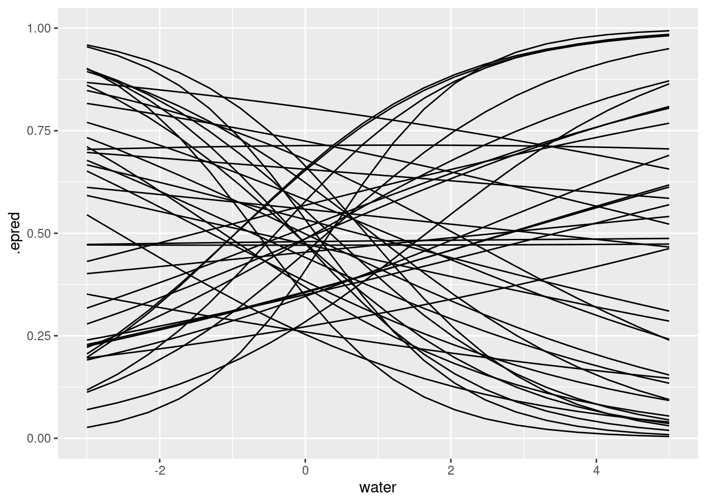
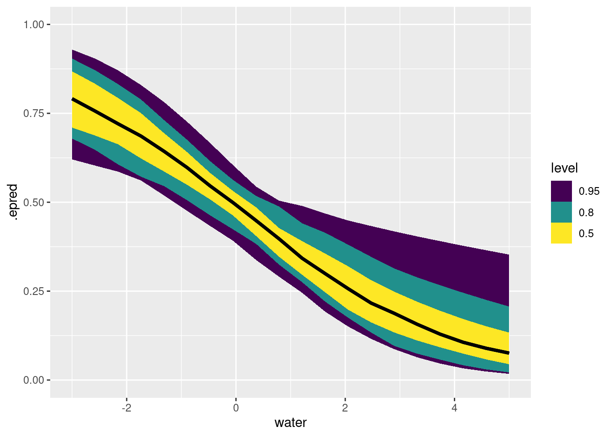
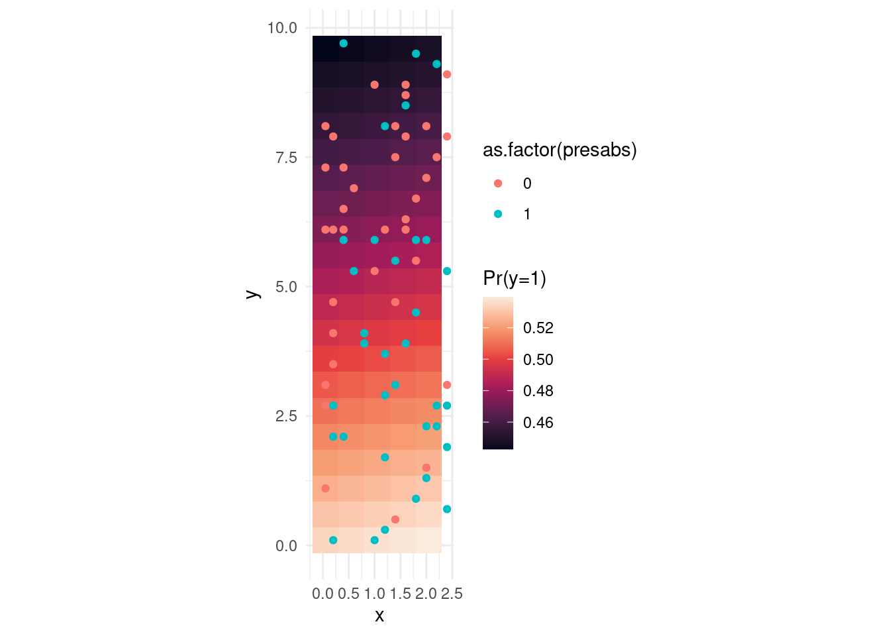

Michael Betancourt has an extremely detailed, very rigous tutorial on GPs
Here’s a complete, worked analysis of human birthdays by world-class statisticians (Gelman, Vehtari, Simpson, et al)
GPs are related to GAMs and can be represented by a collection of basis functions. This is approximate but much much faster. See this excellent tutorial by Aki Vehtari, and the corresponding paper (citation in the blog post).
Let’s begin by (once again!) loading and reorganizing the mite data. This time we’ll also use mite.xy, which gives the coordinates of each one of the 70 samples.
Let’s choose just one species as an example. I’ve chosen one where the relationship with water is rather strong, and for which presence and absence are roughly balanced. This is just to make the example clear.
## formulapwil_water_bf <-bf(presabs ~1+ water +gp(water),family =bernoulli(link ="logit"))## priorget_prior(pwil_water_bf, data = pwil_data)
prior class coef group resp dpar nlpar lb ub
(flat) b
(flat) b water
student_t(3, 0, 2.5) Intercept
(flat) lscale 0
inv_gamma(1.494197, 0.056607) lscale gpwater 0
student_t(3, 0, 2.5) sdgp 0
student_t(3, 0, 2.5) sdgp gpwater 0
tag source
default
(vectorized)
default
default
default
default
(vectorized)
pwil_water_prior <-c(set_prior("normal(0, 0.5)", class ="b", coef ="water"),set_prior("normal(0, 0.2)", class ="Intercept"),set_prior("normal(0, 0.8)", class ="sdgp", lb =0),set_prior("inv_gamma(5, 14)", class ="lscale", coef ="gpwater"))stancode(pwil_water_bf, prior = pwil_water_prior, data = pwil_data)
// generated with brms 2.23.0
functions {
/* compute a latent Gaussian process with squared exponential kernel
* Args:
* x: array of continuous predictor values
* sdgp: marginal SD parameter
* lscale: length-scale parameter
* zgp: vector of independent standard normal variables
* Returns:
* a vector to be added to the linear predictor
*/
vector gp_exp_quad(data array[] vector x, real sdgp, vector lscale, vector zgp) {
int Dls = rows(lscale);
int N = size(x);
matrix[N, N] cov;
if (Dls == 1) {
// one dimensional or isotropic GP
cov = gp_exp_quad_cov(x, sdgp, lscale[1]);
} else {
// multi-dimensional non-isotropic GP
cov = gp_exp_quad_cov(x[, 1], sdgp, lscale[1]);
for (d in 2:Dls) {
cov = cov .* gp_exp_quad_cov(x[, d], 1, lscale[d]);
}
}
for (n in 1:N) {
// deal with numerical non-positive-definiteness
cov[n, n] += 1e-12;
}
return cholesky_decompose(cov) * zgp;
}
}
data {
int<lower=1> N; // total number of observations
array[N] int Y; // response variable
int<lower=1> K; // number of population-level effects
matrix[N, K] X; // population-level design matrix
int<lower=1> Kc; // number of population-level effects after centering
// data related to GPs
int<lower=1> Kgp_1; // number of sub-GPs (equal to 1 unless 'by' was used)
int<lower=1> Dgp_1; // GP dimension
// number of latent GP groups
int<lower=1> Nsubgp_1;
// indices of latent GP groups per observation
array[N] int<lower=1> Jgp_1;
array[Nsubgp_1] vector[Dgp_1] Xgp_1; // covariates of the GP
int prior_only; // should the likelihood be ignored?
}
transformed data {
matrix[N, Kc] Xc; // centered version of X without an intercept
vector[Kc] means_X; // column means of X before centering
for (i in 2:K) {
means_X[i - 1] = mean(X[, i]);
Xc[, i - 1] = X[, i] - means_X[i - 1];
}
}
parameters {
vector[Kc] b; // regression coefficients
real Intercept; // temporary intercept for centered predictors
vector<lower=0>[Kgp_1] sdgp_1; // GP standard deviation parameters
array[Kgp_1] vector<lower=0>[1] lscale_1; // GP length-scale parameters
vector[Nsubgp_1] zgp_1; // latent variables of the GP
}
transformed parameters {
// prior contributions to the log posterior
real lprior = 0;
lprior += normal_lpdf(b[1] | 0, 0.5);
lprior += normal_lpdf(Intercept | 0, 0.2);
lprior += normal_lpdf(sdgp_1 | 0, 0.8)
- 1 * normal_lccdf(0 | 0, 0.8);
lprior += inv_gamma_lpdf(lscale_1[1][1] | 5, 14);
}
model {
// likelihood including constants
if (!prior_only) {
vector[Nsubgp_1] gp_pred_1 = gp_exp_quad(Xgp_1, sdgp_1[1], lscale_1[1], zgp_1);
// initialize linear predictor term
vector[N] mu = rep_vector(0.0, N);
mu += Intercept + gp_pred_1[Jgp_1];
target += bernoulli_logit_glm_lpmf(Y | Xc, mu, b);
}
// priors including constants
target += lprior;
target += std_normal_lpdf(zgp_1);
}
generated quantities {
// actual population-level intercept
real b_Intercept = Intercept - dot_product(means_X, b);
}
## simulate from the modelpwil_prior_brm <-brm(pwil_water_bf, prior = pwil_water_prior, data = pwil_data, sample_prior ="only",cores =4, file = here::here("topics/04_gp/pwil_prior_brm.rds"),file_refit ="on_change")
Compiling Stan program...
Trying to compile a simple C file
Running /usr/lib/R/bin/R CMD SHLIB foo.c
using C compiler: ‘gcc (Ubuntu 11.4.0-1ubuntu1~22.04.2) 11.4.0’
gcc -I"/usr/share/R/include" -DNDEBUG -I"/home/andrew/R/x86_64-pc-linux-gnu-library/4.5/Rcpp/include/" -I"/home/andrew/R/x86_64-pc-linux-gnu-library/4.5/RcppEigen/include/" -I"/home/andrew/R/x86_64-pc-linux-gnu-library/4.5/RcppEigen/include/unsupported" -I"/home/andrew/R/x86_64-pc-linux-gnu-library/4.5/BH/include" -I"/home/andrew/R/x86_64-pc-linux-gnu-library/4.5/StanHeaders/include/src/" -I"/home/andrew/R/x86_64-pc-linux-gnu-library/4.5/StanHeaders/include/" -I"/home/andrew/R/x86_64-pc-linux-gnu-library/4.5/RcppParallel/include/" -I"/home/andrew/R/x86_64-pc-linux-gnu-library/4.5/rstan/include" -DEIGEN_NO_DEBUG -DBOOST_DISABLE_ASSERTS -DBOOST_PENDING_INTEGER_LOG2_HPP -DSTAN_THREADS -DUSE_STANC3 -DSTRICT_R_HEADERS -DBOOST_PHOENIX_NO_VARIADIC_EXPRESSION -D_HAS_AUTO_PTR_ETC=0 -include '/home/andrew/R/x86_64-pc-linux-gnu-library/4.5/StanHeaders/include/stan/math/prim/fun/Eigen.hpp' -D_REENTRANT -DRCPP_PARALLEL_USE_TBB=1 -fpic -g -O2 -ffile-prefix-map=/build/r-base-xupQTd/r-base-4.5.2=. -fstack-protector-strong -Wformat -Werror=format-security -Wdate-time -D_FORTIFY_SOURCE=2 -c foo.c -o foo.o
In file included from /home/andrew/R/x86_64-pc-linux-gnu-library/4.5/RcppEigen/include/Eigen/Core:19,
from /home/andrew/R/x86_64-pc-linux-gnu-library/4.5/RcppEigen/include/Eigen/Dense:1,
from /home/andrew/R/x86_64-pc-linux-gnu-library/4.5/StanHeaders/include/stan/math/prim/fun/Eigen.hpp:22,
from <command-line>:
/home/andrew/R/x86_64-pc-linux-gnu-library/4.5/RcppEigen/include/Eigen/src/Core/util/Macros.h:679:10: fatal error: cmath: No such file or directory
679 | #include <cmath>
| ^~~~~~~
compilation terminated.
make: *** [/usr/lib/R/etc/Makeconf:202: foo.o] Error 1
Start sampling
x_value_df <- tibble::enframe(x =seq(from =-3, to =5, length.out =20),name ="i", value ="water")x_value_df |> tidybayes::add_epred_draws(pwil_prior_brm, ndraws =40) |>ggplot(aes(x= water, y = .epred, group = .draw)) +geom_line()+coord_cartesian(ylim =c(0, 1))

fit this model to data:
With a working simulation, we can now adapt the model to handle real data.
## simulate from the modelpwil_posterior_brm <-brm(pwil_water_bf, prior = pwil_water_prior, data = pwil_data, sample_prior ="no",cores =4, refresh =0,file = here::here("topics/04_gp/pwil_posterior_brm.rds"),file_refit ="on_change")
Compiling Stan program...
Trying to compile a simple C file
Running /usr/lib/R/bin/R CMD SHLIB foo.c
using C compiler: ‘gcc (Ubuntu 11.4.0-1ubuntu1~22.04.2) 11.4.0’
gcc -I"/usr/share/R/include" -DNDEBUG -I"/home/andrew/R/x86_64-pc-linux-gnu-library/4.5/Rcpp/include/" -I"/home/andrew/R/x86_64-pc-linux-gnu-library/4.5/RcppEigen/include/" -I"/home/andrew/R/x86_64-pc-linux-gnu-library/4.5/RcppEigen/include/unsupported" -I"/home/andrew/R/x86_64-pc-linux-gnu-library/4.5/BH/include" -I"/home/andrew/R/x86_64-pc-linux-gnu-library/4.5/StanHeaders/include/src/" -I"/home/andrew/R/x86_64-pc-linux-gnu-library/4.5/StanHeaders/include/" -I"/home/andrew/R/x86_64-pc-linux-gnu-library/4.5/RcppParallel/include/" -I"/home/andrew/R/x86_64-pc-linux-gnu-library/4.5/rstan/include" -DEIGEN_NO_DEBUG -DBOOST_DISABLE_ASSERTS -DBOOST_PENDING_INTEGER_LOG2_HPP -DSTAN_THREADS -DUSE_STANC3 -DSTRICT_R_HEADERS -DBOOST_PHOENIX_NO_VARIADIC_EXPRESSION -D_HAS_AUTO_PTR_ETC=0 -include '/home/andrew/R/x86_64-pc-linux-gnu-library/4.5/StanHeaders/include/stan/math/prim/fun/Eigen.hpp' -D_REENTRANT -DRCPP_PARALLEL_USE_TBB=1 -fpic -g -O2 -ffile-prefix-map=/build/r-base-xupQTd/r-base-4.5.2=. -fstack-protector-strong -Wformat -Werror=format-security -Wdate-time -D_FORTIFY_SOURCE=2 -c foo.c -o foo.o
In file included from /home/andrew/R/x86_64-pc-linux-gnu-library/4.5/RcppEigen/include/Eigen/Core:19,
from /home/andrew/R/x86_64-pc-linux-gnu-library/4.5/RcppEigen/include/Eigen/Dense:1,
from /home/andrew/R/x86_64-pc-linux-gnu-library/4.5/StanHeaders/include/stan/math/prim/fun/Eigen.hpp:22,
from <command-line>:
/home/andrew/R/x86_64-pc-linux-gnu-library/4.5/RcppEigen/include/Eigen/src/Core/util/Macros.h:679:10: fatal error: cmath: No such file or directory
679 | #include <cmath>
| ^~~~~~~
compilation terminated.
make: *** [/usr/lib/R/etc/Makeconf:202: foo.o] Error 1
Start sampling
x_value_df <- tibble::enframe(x =seq(from =-3, to =5, length.out =20),name ="i", value ="water")x_value_df |> tidybayes::add_epred_draws(pwil_posterior_brm, ndraws =50) |>ggplot(aes(x= water, y = .epred)) +stat_lineribbon() +coord_cartesian(ylim =c(0, 1))

This can also be accomplished with the function brms::conditional_effects
`summarise()` has grouped output by 'x', 'y'. You can override using the
`.groups` argument.

Source Code
---title: "Gaussian Processes in Stan"description: | Smooth lines in fancy colours.execute: freeze: truecomments: hypothesis: trueformat: html: code-tools: trueeditor_options: chunk_output_type: console---:::{.callout-tip}## Goals of this lesson1. Let's appreciate together the power of online community resources1. Gaussian Processes are families of smooth functions we learn from data1. When used for prediction, a GP is both a "prior" and a "likelihood":::## Background readingGaussian processes are very common, and there are lots of resources on the topic:1. The Stan manual [has a chapter on it](https://mc-stan.org/docs/stan-users-guide/gaussian-processes.html)1. The Stan team gives lots of [example models on Github](https://github.com/stan-dev/example-models/blob/master/misc/gaussian-process/gp-fit-logit.stan) which I adapted for this example.1. Michael Betancourt has an extremely detailed, very rigous [tutorial on GPs](https://betanalpha.github.io/assets/case_studies/gaussian_processes.html#3_Inferring_A_Gaussian_Process)1. Here's a complete, worked [analysis of human birthdays](https://avehtari.github.io/casestudies/Birthdays/birthdays.html#Model_4:_long_term_smooth_+_seasonal_+_weekday_with_increasing_magnitude) by world-class statisticians (Gelman, Vehtari, Simpson, et al)1. GPs are related to GAMs and can be represented by a collection of basis functions. This is approximate but much much faster. See this [excellent tutorial](https://avehtari.github.io/casestudies/Motorcycle/motorcycle_gpcourse.html#45_GP_with_basis_functions_for_f_and_g) by Aki Vehtari, and the corresponding paper (citation in the blog post).1. this [blog](https://rpubs.com/NickClark47/stan_geostatistical) applies GPs to spatial count data1. Here is a very long and wonderfully detailed post describing a GP approach to [occupany modelling](https://peter-stewart.github.io/blog/gaussian-process-occupancy-tutorial/)1. Another [blog on Gaussian Processes](https://brendanhasz.github.io/2018/10/10/hmm-vs-gp.html#generating-data-from-a-gaussian-process), Hidden Markov Models and more, very clear explanation.#### `brms` specific resources1. [brms translation](https://bookdown.org/content/4857/adventures-in-covariance.html) of Statistical Rethinking<!-- add equation --><!-- add simulation -->### Reorganizing the mite dataLet's begin by (once again!) loading and reorganizing the mite data. This time we'll also use `mite.xy`, which gives the coordinates of each one of the 70 samples.#### Loading models and data```{r setup}suppressPackageStartupMessages(library(dplyr))library(ggplot2)library(tidyr)# library(cmdstanr)suppressPackageStartupMessages(library(brms))library(tidybayes)# mite datadata(mite, package ="vegan")data(mite.env, package ="vegan")## ALSO: the spatial datadata(mite.xy, package ="vegan")``````{r reorganize-mites-again}# combine data and environmentmite_data_long <-bind_cols(mite.env, mite) |>mutate(plot_id =1:length(WatrCont)) |>pivot_longer(Brachy:Trimalc2, names_to ="spp", values_to ="abd")mite_data_long_transformed <- mite_data_long |>mutate(presabs =as.numeric(abd>0),# center predictorswater = (WatrCont -mean(WatrCont)) /100 )# pick a species that has about 50/50 chance mite_data_long_transformed |>group_by(spp) |>summarize(freq =mean(presabs)) |>filter(freq > .4& freq < .6)## how about: PWIL ```Let's choose just one species as an example. I've chosen one where the relationship with water is rather strong, and for which presence and absence are roughly balanced. This is just to make the example clear.```{r}#| fig-cap: Probability of occurrance of one mite species, as a fuction of water content of the soilpwil_data <- mite_data_long_transformed |>filter(spp =="PWIL")pwil_data |>ggplot(aes(x = water, y = presabs)) +geom_point() +stat_smooth(method = glm, method.args =list(family ="binomial")) +theme_minimal()``````{r}#| fig-cap: Presence-absence data for mite species "PWIL", at the spatial location of each point.# add the spatial coordinates:pwil_spatial <-bind_cols(pwil_data, mite.xy)pwil_spatial |>ggplot(aes(x = x, y = y, fill =as.factor(presabs))) +geom_point(size =3, pch =21, stroke =1) +scale_fill_brewer(type ="qual", palette ="Dark2") +theme_minimal() +coord_fixed() +labs(fill ="Pres/Abs")```We'll look at two possibilities in turn: 1. A nonlinear function of one variable1. A smooth function of distance# Smooth function of one variable## Write the model$$\begin{align}\mathsf{Pr}(y_i = 1) &\sim \mathsf{Bernoulli}(p_i)\\\mathsf{logit}(p_i) &= a + f_i\\f_i &\sim \mathsf{multivariate\ normal}(0, K(x | \theta)) \\ K(x | \alpha, \rho, \sigma)_{i, j}&= \alpha^2\exp \left(- \dfrac{1}{2 \rho^2} \sum_{d=1}^D (x_{i,d} - x_{j,d})^2\right)+ \delta_{i, j} \sigma^2,\end{align}$$That's the general notation for D dimensions. In our case we're looking at something much simpler.$$\begin{align}\mathsf{Pr}(y_i = 1) &\sim \mathsf{Bernoulli}(p_i)\\\mathsf{logit}(p_i) &= a + f_i\\f_i &\sim \mathsf{Multivariate\ Normal}(0, K(x | \theta)) \\ K(x | \alpha, \rho, \sigma)_{i, j}&= \alpha^2e^{\frac{-(\text{water}_i - \text{water}_j)^2}{2 \rho^2}}+ \delta_{i, j} \sigma^2 \\\rho &\sim \mathsf{Inverse\ Gamma}(5, 14) \\\alpha &\sim \mathsf{Normal}(0, .8) \\a &\sim \mathsf{Normal}(0, .2) \\\end{align}$$Here's an interpretation of the parameters of this model: * $a^2$ is the maximum covariance between two points* $\rho$ tells us how quickly that covariance goes down as two samples become more different in their water amount* $\delta_{i, j} \sigma^2$ adds the variances along the diagonalSee the explanation of this function in the [Stan User's guide](https://mc-stan.org/docs/stan-users-guide/gaussian-processes.html#gaussian-process-regression). ## Simulate to understand itHere is the brms code that replicates the mathematical model above.```{r}## dataglimpse(pwil_data)## formulapwil_water_bf <-bf(presabs ~1+ water +gp(water),family =bernoulli(link ="logit"))## priorget_prior(pwil_water_bf, data = pwil_data)pwil_water_prior <-c(set_prior("normal(0, 0.5)", class ="b", coef ="water"),set_prior("normal(0, 0.2)", class ="Intercept"),set_prior("normal(0, 0.8)", class ="sdgp", lb =0),set_prior("inv_gamma(5, 14)", class ="lscale", coef ="gpwater"))stancode(pwil_water_bf, prior = pwil_water_prior, data = pwil_data)## simulate from the modelpwil_prior_brm <-brm(pwil_water_bf, prior = pwil_water_prior, data = pwil_data, sample_prior ="only",cores =4, file = here::here("topics/04_gp/pwil_prior_brm.rds"),file_refit ="on_change")``````{r}x_value_df <- tibble::enframe(x =seq(from =-3, to =5, length.out =20),name ="i", value ="water")x_value_df |> tidybayes::add_epred_draws(pwil_prior_brm, ndraws =40) |>ggplot(aes(x= water, y = .epred, group = .draw)) +geom_line()+coord_cartesian(ylim =c(0, 1))```## fit this model to data:With a working simulation, we can now adapt the model to handle real data.```{r}## simulate from the modelpwil_posterior_brm <-brm(pwil_water_bf, prior = pwil_water_prior, data = pwil_data, sample_prior ="no",cores =4, refresh =0,file = here::here("topics/04_gp/pwil_posterior_brm.rds"),file_refit ="on_change")``````{r}x_value_df <- tibble::enframe(x =seq(from =-3, to =5, length.out =20),name ="i", value ="water")x_value_df |> tidybayes::add_epred_draws(pwil_posterior_brm, ndraws =50) |>ggplot(aes(x= water, y = .epred)) +stat_lineribbon() +coord_cartesian(ylim =c(0, 1))```This can also be accomplished with the function `brms::conditional_effects````{r}conditional_effects(pwil_posterior_brm)```<!--  --># Spatial predictions### Prior predictive simulations```{r}## dataglimpse(pwil_spatial)## formulapwil_spatial_bf <-bf(presabs ~1+gp(x, y),family =bernoulli(link ="logit"))## priorget_prior(pwil_spatial_bf, data = pwil_spatial)pwil_spatial_prior <-c(set_prior("normal(0, 0.2)", class ="Intercept"),set_prior("normal(0, 0.8)", class ="sdgp", lb =0),set_prior("inv_gamma(5, 14)", class ="lscale", coef ="gpxy"))# stancode(pwil_spatial_bf, prior = pwil_spatial_prior, data = pwil_spatial)## simulate from the modelpwil_spatial_brm <-brm(pwil_spatial_bf, prior = pwil_spatial_prior, data = pwil_spatial, sample_prior ="yes",cores =4, refresh =0,file = here::here("topics/04_gp/pwil_spatial_brm.rds"),file_refit ="on_change")```To visualize predictions we need a grid of points to predict along:```{r}grid_points <- modelr::data_grid(mite.xy, x = modelr::seq_range(x, by = .5),y = modelr::seq_range(y, by = .5)) grid_points |>ggplot(aes(x = x, y = y)) +geom_point() +coord_fixed()```:::{.callout-warning}## CAUTION: SlowThe model below, over 70 points, is the slowest model we've seen so far and takes about 1 minute on my (Andrew's) laptop.:::plot the effect in space:```{r}grid_points <- modelr::data_grid(mite.xy, x = modelr::seq_range(x, by = .5),y = modelr::seq_range(y, by = .5)) grid_points |>ggplot(aes(x = x, y = y)) +geom_point() +coord_fixed()``````{r}pwil_spatial_post_pred <- grid_points |>add_epred_draws(pwil_spatial_brm, draws =10)pwil_spatial_post_pred |>summarize(avg_pred =mean(.epred)) |>ungroup() |>ggplot(aes(x = x, y = y, fill = avg_pred)) +geom_tile() +geom_point(aes(x = x,y = y,col =as.factor(presabs)),inherit.aes =FALSE,data = pwil_spatial,# pch = 21 ,# size = 2.5,# stroke = .3,# colour = "lightblue" ) +scale_fill_viridis_c(option ="rocket") +coord_fixed()+theme_minimal() +labs(fill ="Pr(y=1)") +NULL```